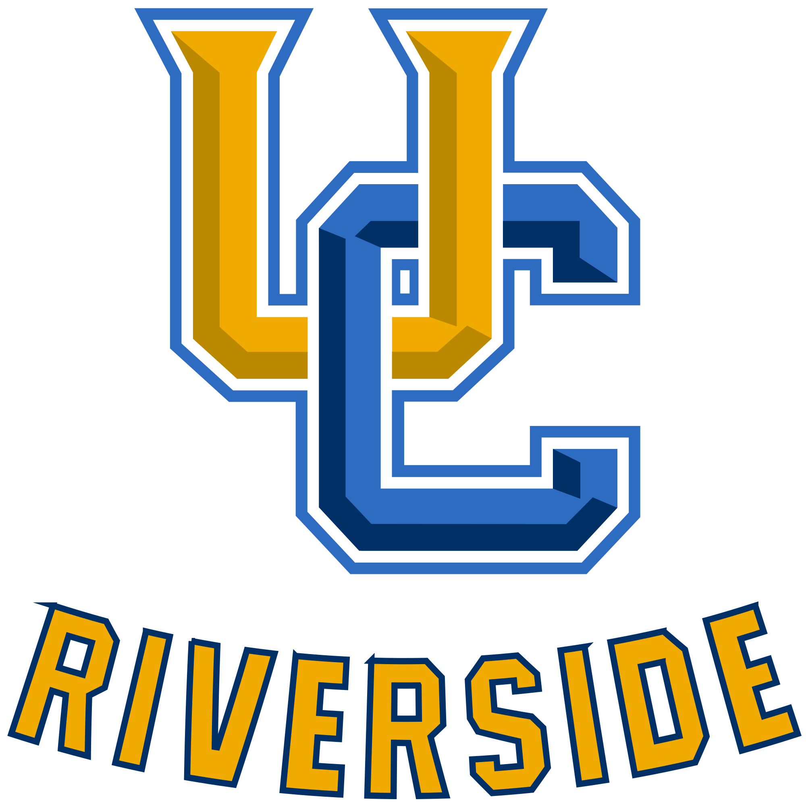
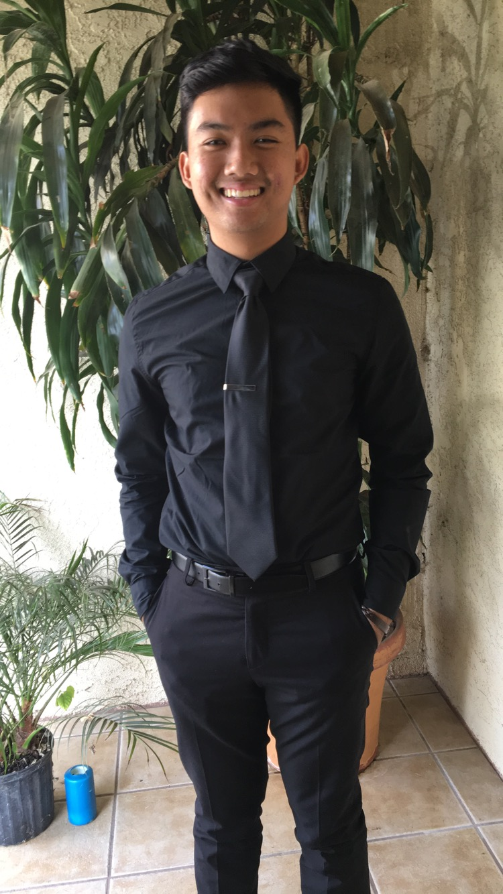
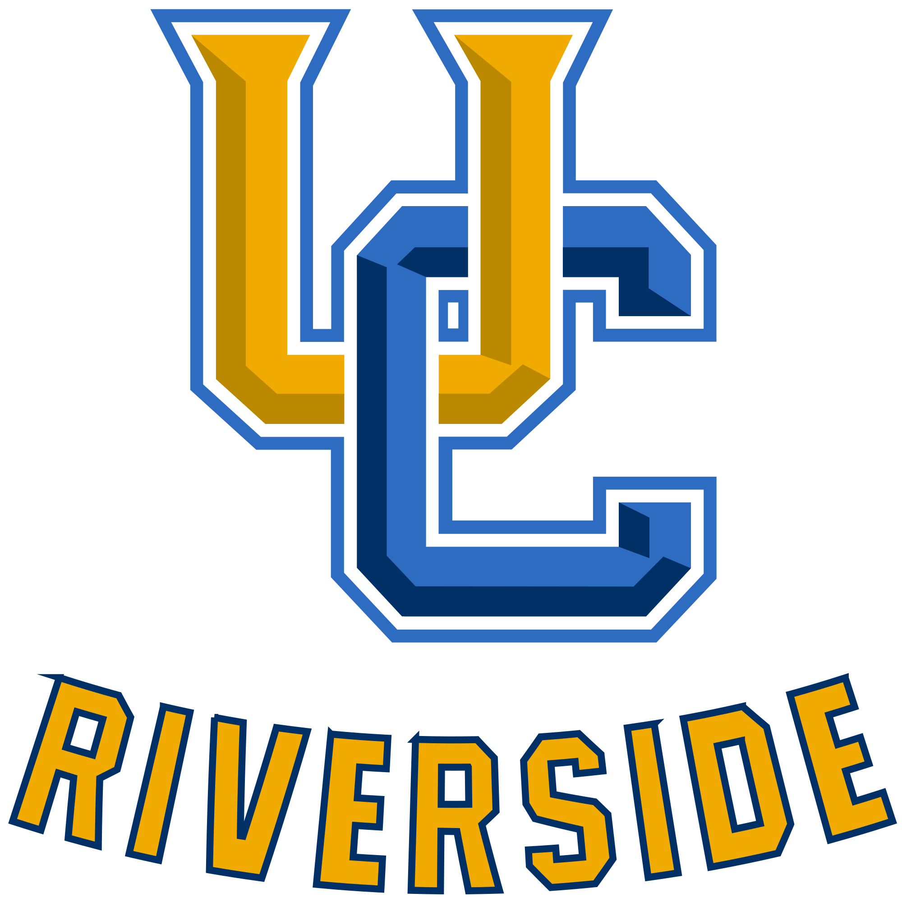
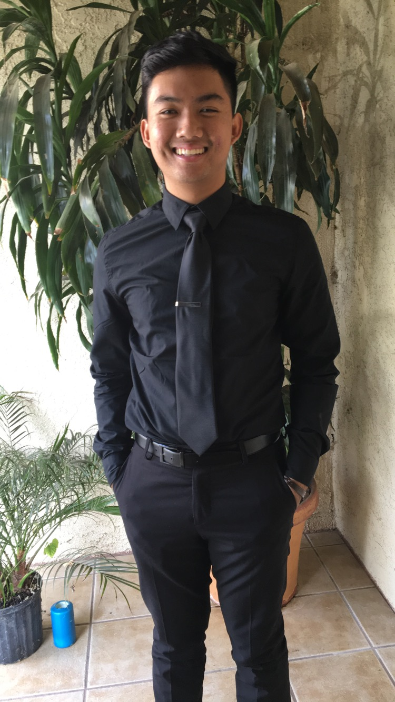

Tyler Hit is a fourth-year student attending Don Antonio Lugo High School. He is and has been involved in the Lugo Engineering and Design Academy for all four years being Intro into Design, Principles of Engineering, Digital Electronics, and Engineering Design and Development. He has been in Key Club as well for two years and is the 2nd Vice President this year. His more notable accomplishment is maintaining a GPA of 3.7 and being accepted into some of his most praised upon schools. He has been seeking the career of civil engineering and film as they are his passion. Some of his most memorable moments during high school are volunteering with Key Club and taking part in all the projects that are conducted in LEAD. Socially, he has enjoyed meeting and making new friendships throughout the years of high school that he hopes to continue his career with. Tyler Hit is a hard-working student, whose career and passion are soon to come.
His persuit in the career of filmmaking or cinematography will involve engineering and the people in the field as it does interest him. He is inspired by the way the community can impact another so greatly
I hope to by the end of this school year to have gained enough knowledge so that I am able to get my name out there to become a more well-rounded student

 


